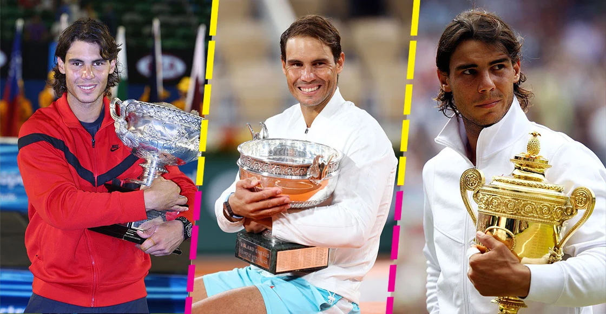

Fútbol
Rafa Nadal: el primer tenista hombre
con 22 Grand Slam
30 finales de Grand Slam (22-8)
La primera vez que lo ganó tenía 19 años (París 2005) hasta el último que ganó que fue el 5 de junio de 2022, juego que duró más de 2 horas y 15 minutos ubicado en la cancha Philippe-Chatrier en Paris, Francia
Su primera derrota en una final
Llegaría en Wimblendon en el 2006 ante Roger Federer siendo la única final en la que recibiría un rosco
